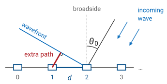
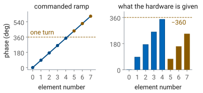
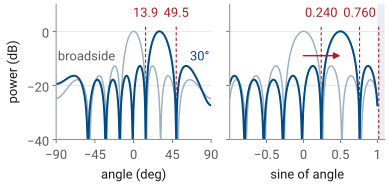
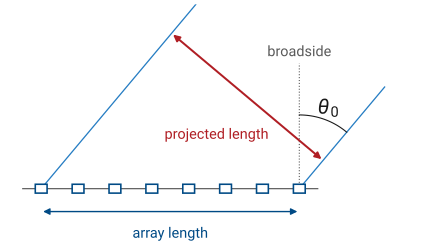
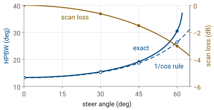
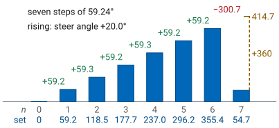

L18 - Beam Steering Theory#
Beam Steering Theory
The phase each PHASER element needs to steer the beam to a commanded angle, and what the steered beam looks like.
Lesson 18 · Antennas, Phased Arrays, and Radar Systems · Dr. Neil Rogers
Slides
Learning Objectives
- I can calculate the phase weights required to steer a beam to a given angle and predict the resulting array pattern.
Lesson 17 put the PHASER in front of you: eight patch elements in a row, two
ADAR1000 beamformer chips that set a phase on every element, and the backend
code that writes the steering ramp i*PhDelta to them. In the GUI, Beam
Steering’s Steer Angle sets that ramp, and Phase Control adds per-element
offsets on top of it. Nothing so far has said what the ramp should be. We derive the
element-to-element phase from the arrival geometry, turn it into the eight
settings the hardware accepts, predict what the steered pattern looks like, and
then read the process backwards — given a set of phases, find the angle the
array is pointing.
Time Alignment
Eight elements in a row, \(d = 14\ \text{mm}\) apart, with no phase applied.
A plane wave from \(\theta_0\) off broadside reaches them one after another, not all at once.
Undoing those arrival differences makes all eight signals add in phase.
Eight elements sit in a row with no phase applied, spaced \(d = 14\ \text{mm}\) apart, and a plane wave arrives from an angle \(\theta_0\) measured from broadside. The wavefront reaches the element nearest the source first and each successive element later.
The widget opens with the steer angle locked to the source, so the commanded delays line all eight signals up and each ADAR1000’s four-element sum adds in phase with the other’s. Clear the lock and move the steer angle away from the source: the delays no longer match the arrival times, the two chip sums part, and the total shrinks.
Path, Time, and Phase
\(\Delta r\) is the extra path between neighbors; element \(n\) sees \(n\) times each quantity.
At \(\theta_0 = 30^\circ\): \(7\ \text{mm}\) and about \(23\ \text{ps}\) per element.

Look at two neighboring elements. The wavefront that has just touched one of them still has to travel a short leg before it touches the other. That leg is one side of a right triangle whose hypotenuse is the element spacing \(d\) and whose angle at the element is \(\theta_0\), so its length is
Element \(n\) sits \(n\) spacings from element 0, so its path runs \(n\ d\sin\theta_0\) shorter — it sees the wave that much sooner.
Dividing the path difference by the speed of light gives the arrival-time difference between neighbors:
For the course array steered to \(30^\circ\), that is \(7\ \text{mm}\) of path and about \(23\ \text{ps}\) of arrival-time difference per element.
Now convert the time offset into a phase. A time offset of \(\Delta t\) at frequency \(f\) shifts a sinusoid’s phase by \(\omega\Delta t\), so the incoming wave produces an element-to-element phase difference of
Element \(n\) receives the wave \(n\ \Delta t\) before element 0, so its signal leads element 0’s by \(n\ \omega\Delta t = n\ \Delta\phi\). To line the eight signals up, the phase shifter on element \(n\) delays it by that same \(n\ \Delta\phi\).
Reading the Progressive Phase
Broadside needs none: all phases at zero point the beam at \(0^\circ\).
It follows \(\sin\theta_0\): \(0^\circ\) to \(10^\circ\) needs \(30.1^\circ\), \(80^\circ\) to \(90^\circ\) only \(2.6^\circ\).
It scales with \(d/\lambda\): a higher frequency needs more phase per element.
This is the progressive phase, and it is the equation the rest of Module 3 runs on. Read what it says. At broadside, \(\sin\theta_0 = 0\) and no phase is needed, which is why the array points to \(0^\circ\) with every phase set to zero. The phase grows with the sine of the steer angle rather than with the angle, so the same \(10^\circ\) of extra scan needs much less added phase near endfire than it does near broadside: on the course array, steering from \(0^\circ\) to \(10^\circ\) takes \(30.1^\circ\) of added phase per element, and steering from \(80^\circ\) to \(90^\circ\) takes \(2.6^\circ\). And the phase scales with the electrical spacing \(d/\lambda\): the same array asked to steer the same angle needs more phase per element as the frequency goes up.
Key Point
\(\Delta\phi = kd\sin\theta_0\) converts a geometric path difference into an electrical one. The phase table, the steered pattern, and the inverse problem all follow from this one relation.
Single-Frequency Validity
A true time delay steers the beam to \(\theta_0\) at every frequency.
A phase shift equals that delay at one frequency only, the one used for \(k\).
Elsewhere the beam points slightly off \(\theta_0\): beam squint, which L26 quantifies.
Note
\(\Delta t\) is a true delay and \(\Delta\phi\) is a phase shift, and the two are equal at exactly one frequency, the one used to compute \(k\). A true time delay would steer the beam to \(\theta_0\) at every frequency in the band; a phase shifter steers it to \(\theta_0\) only at the design frequency and to a slightly different angle everywhere else. That difference has a name, beam squint, and L26 quantifies it. For now, every phase we compute today is correct only at that frequency.
Sign of the Compensating Ramp
Element \(n\) leads element 0 by \(n\ \Delta\phi\); the ADAR1000 delays it by that amount.
A positive ramp steers to \(+\theta_0\), as the GUI’s Steer Angle does.
Element 0 sits at zero; a negative \(\theta_0\) runs the ramp downward.
The array’s own geometry gives element \(n\) a phase lead of \(n\ \Delta\phi\) over element 0. To make all eight signals add in phase, the beamformer delays element \(n\) by that same amount. The ADAR1000’s phase setting is a delay, so the phase commanded to element \(n\) is the lead itself:
Element 0 is the reference and gets zero. Each element after it is delayed one
step more. A positive ramp steers the beam to \(+\theta_0\), which is the
convention of the GUI’s Steer Angle and of the backend code L17 read, which
writes i*PhDelta to element i. Flipping the sign of \(\theta_0\) flips the
sign of \(\Delta\phi\) and runs the ramp the other way, which is how the same
eight channels cover both sides of broadside.
L16 wrote the same steering as a complex weight, \(a_n = \vert a_n\vert\ e^{-jn\beta}\) with \(\beta = \Delta\phi\). A delay of \(n\ \Delta\phi\) multiplies element \(n\)’s signal by \(e^{-jn\Delta\phi}\), so the weight carries a minus sign that the setting does not. That weight phase is the one place \(-n\ \Delta\phi\) survives; every phase setting in this lesson and in the lab is \(+n\ \Delta\phi\).
The Course Array
At \(10.3\ \text{GHz}\) with \(d = 14\ \text{mm}\): \(\lambda = 29.1\ \text{mm}\) and \(d/\lambda = 0.481\).
One number, \(kd\), sets \(\Delta\phi\) for every steer angle on this array.
For the course array at the workshop frequency, \(\lambda = 29.1\ \text{mm}\), \(d/\lambda = 0.481\), and
Multiplying \(kd\) by \(\sin\theta_0\) gives \(\Delta\phi\) for any steer angle on this array.
The eight elements sit on two ADAR1000s, elements 0 to 3 on one and 4 to 7 on the other, and each chip sums its four into one channel; L17’s “The Hybrid Beamformer” adds the two channels digitally. The ramp continues across the chip boundary, so \(\phi_4 = 4\ \Delta\phi\) is set on the second chip. It steers the whole array only if the two subarray channels are phase-matched where they are summed. The GUI’s Calibrate step measures each element’s phase against its neighbor, including the element 3 and 4 pair that spans the two chips, so the mismatch between the subarrays is folded into the offsets of elements 4 to 7.
Worked Example: Phase Table at 30°
\(n\) |
0 |
1 |
2 |
3 |
|---|---|---|---|---|
set |
0 |
86.6 |
173.2 |
259.8 |
\(n\) |
4 |
5 |
6 |
7 |
set |
346.4 |
73.0 |
159.6 |
246.2 |
Whole turns wrap each \(n(86.6^\circ)\) into \(0^\circ\) to \(360^\circ\): \(433.0^\circ\) becomes \(73.0^\circ\).

Worked example — the phase table for \(\theta_0 = 30^\circ\)
At \(10.3\ \text{GHz}\) with \(d = 14\ \text{mm}\):
Element \(n\) is commanded to \(n(86.6^\circ)\). The ADAR1000 accepts a phase in \(0^\circ\) to \(360^\circ\), so each value is wrapped by subtracting whole turns until it lands in that range.
\(n\) |
0 |
1 |
2 |
3 |
4 |
5 |
6 |
7 |
|---|---|---|---|---|---|---|---|---|
\(\phi_n\) (ramp) |
0 |
86.6 |
173.2 |
259.8 |
346.4 |
433.0 |
519.6 |
606.2 |
turns removed |
0 |
0 |
0 |
0 |
0 |
\(-360\) |
\(-360\) |
\(-360\) |
\(\phi_n\) (set) |
0 |
86.6 |
173.2 |
259.8 |
346.4 |
73.0 |
159.6 |
246.2 |
The bottom row is what goes into the hardware. It climbs to element 4, drops back by a turn, and climbs again, a sawtooth rather than a single ramp, and it is correct: a phase of \(433.0^\circ\) and a phase of \(73.0^\circ\) produce the same field from that element.
Phase Wrapping and True Delay
At one frequency, whole turns change nothing the array can detect.
The wrapped table loses the record of the true delay.
So wideband systems use time-delay units instead of, or alongside, phase shifters.
Wrapping discards whole turns, and at a single frequency nothing is lost by discarding them. The array cannot tell the difference. What the wrapped table does lose is the record of the true delay, which is the reason a wideband system uses time-delay units instead of, or alongside, phase shifters.
The Steered Pattern
Element \(n\) arrives with phase \(n\ kd\sin\theta\); its delay subtracts \(n\ \Delta\phi\).
\(\Delta\phi\) is L16’s \(\beta\): the function is unchanged, only its argument.
The peak at \(\psi = 0\) now means \(\sin\theta = \sin\theta_0\): the beam points at \(\theta_0\).
L16 built the array factor for a uniform line of \(N\) elements with a progressive phase between them. With the ramp \(\phi_n = n\ \Delta\phi\) set as a delay, element \(n\) contributes a propagation phase \(n\ kd\sin\theta\) and its delay takes away \(n\ \Delta\phi\), so the array-factor argument becomes
The \(\Delta\phi\) here is the \(\beta\) of L16’s steering phase. The function is unchanged; only its argument has shifted. The peak still sits at \(\psi = 0\), which now means \(\sin\theta = \sin\theta_0\), so the main lobe points at the commanded angle.
Rigid Shift in Sine Space
Against \(\sin\theta\) the pattern slides unchanged; against \(\theta\) it stretches as it moves.
At \(30^\circ\), \(\lambda/Nd = 0.260\): nulls at \(13.9^\circ\) and \(49.5^\circ\), \(16.1^\circ\) and \(19.5^\circ\) from the peak, wider toward endfire.
The upper \(m = 2\) null would need \(\sin\theta = 1.020\): no real angle.

Every other feature of the pattern moves with it, but rigidly in \(\sin\theta\), not in \(\theta\). Plot the pattern against \(\sin\theta\) and steering slides the whole curve sideways without changing its shape. Plot it against \(\theta\) and the same curve stretches as it moves, which is the beam broadening derived in “Beam Broadening” below.
The nulls follow the same substitution. \(AF_N\) vanishes when \(N\psi/2\) is a nonzero multiple of \(\pi\), so
At a multiple of \(N\) the numerator and the denominator vanish together, and that point is a grating lobe, not a null. L16’s “Grating Lobes” puts the first one at \(\sin\theta_g = \sin\theta_0 - \lambda/d\) and keeps it out of real space while \(d < \lambda/(1 + \vert\sin\theta_0\vert)\). Steered to \(30^\circ\), the course array would need \(d > 19.4\ \text{mm}\) for one to appear, and a full \(90^\circ\) scan needs only \(d < 14.55\ \text{mm}\), so the PHASER’s \(14\ \text{mm}\) never shows one: at \(30^\circ\) the lobe would sit at \(\sin\theta = -1.58\).
For the course array, \(\lambda/Nd = 29.1/112 = 0.260\). Steered to \(30^\circ\), the two nulls flanking the main lobe are at \(\sin\theta = 0.240\) and \(\sin\theta = 0.760\), or \(13.9^\circ\) and \(49.5^\circ\). They are no longer symmetric about the beam: the main lobe reaches \(16.1^\circ\) below the peak and \(19.5^\circ\) above it, wider toward endfire. The nulls are an equal step of \(0.260\) apart in \(\sin\theta\), and a fixed step in \(\sin\theta\) is a larger step in \(\theta\) where \(\cos\theta\) is small, since \(d\theta = d(\sin\theta)/\cos\theta\). The \(m = 2\) null on the upper side would need \(\sin\theta = 1.020\), which no real angle satisfies, so that null has left the visible region (L16, “Part 4: The Visible Region”) entirely.
Phase Ramp and Beam
Use the widget below to connect the two halves of the lesson. Drag the steer angle and watch the eight commanded phases and the main lobe move together, then switch the phase display between the wrapped values and the unwrapped ramp — the sawtooth is the same physics as the straight line. Switch the x axis to sine and the lobe slides along it without changing shape, by \(0.500\) at \(30^\circ\), the rigid shift of the frame before. Set \(\theta_0 = 30^\circ\) and check the bars against the worked table above: a positive steer angle gives a rising ramp. Then scan out toward \(60^\circ\) and compare the \(-3\) dB width printed on the pattern, which is read off the exact array factor, with the HPBW readout, which is the \(1/\cos\theta_0\) rule: at \(60^\circ\) the rule gives \(26.4^\circ\) and the pattern \(30.5^\circ\).
Beam Broadening
Steering widens the beam: a source at \(\theta_0\) sees the array’s projection, shorter by \(\cos\theta_0\).
L15’s uniform-aperture beamwidth, in radians, with the projected length.

Steering widens the beam because a source at \(\theta_0\) sees the array’s projection onto the plane perpendicular to its line of sight, which is shorter than the array by \(\cos\theta_0\).
The length that matters is \(Nd = 112\ \text{mm}\), not the \(98\ \text{mm}\) between the centers of the first and last elements. L16’s “Part 5: The Array as a Sampled Aperture” treats the array as a line source sampled every \(d\), so each element stands for a cell \(d\) wide and the eight cells fill an equivalent aperture \(Nd = 3.85\lambda\). Using \(98\ \text{mm}\) would give \(15.1^\circ\) at broadside instead of \(13.2^\circ\), against \(13.3^\circ\) read off the exact array factor. The effective aperture length is therefore
L15 gave the half-power beamwidth of a uniform aperture of length \(L\) as
which for the course array at broadside is \(0.886(29.1)/112 = 0.2302\ \text{rad} = 13.2^\circ\). Substituting the projected length,
Scan Loss
The smaller projected aperture lowers the peak gain: \(-3\) dB at \(60^\circ\).
The array factor’s directivity holds near 7.7 as it scans; the element pattern carries the loss.
L22 works out the element factor and the scanned gain.
The beam broadens as \(1/\cos\theta_0\). The same projection argument sets the scan loss in gain: the aperture the array presents to a source at \(\theta_0\) is smaller by \(\cos\theta_0\), so the peak gain drops by
The array factor alone barely changes its directivity as it scans. For isotropic elements it computes to 7.70 at broadside, 7.70 at \(30^\circ\), 7.78 at \(45^\circ\), and 8.16 at \(60^\circ\), a slight rise. A linear array’s beam is a cone around the array axis, not a pencil. Steering tilts that cone toward the axis: its circumference shrinks as \(\cos\theta_0\) while its width in \(\theta\) grows as \(1/\cos\theta_0\), so the solid angle the beam fills, and with it the directivity, stays about the same. The element pattern, which is not isotropic and rolls off away from its own boresight, carries the projected-aperture loss: each element’s cell presents a projected area that shrinks as \(\cos\theta\). L22 derives the element factor and the scanned gain; for design estimates, we use the scan loss above.
Broadening and Scan Loss Versus Angle
\(\theta_0\) |
\(\cos\theta_0\) |
HPBW |
Gain relative to broadside |
|---|---|---|---|
\(0^\circ\) |
1.000 |
\(13.2^\circ\) |
reference |
\(30^\circ\) |
0.866 |
\(15.2^\circ\) |
\(-0.6\) dB |
\(45^\circ\) |
0.707 |
\(18.7^\circ\) |
\(-1.5\) dB |
\(60^\circ\) |
0.500 |
\(26.4^\circ\) |
\(-3.0\) dB |
Exact width at \(60^\circ\) is \(30.5^\circ\): the rule reads narrow past \(50^\circ\) of scan.

Because the beam broadens and the peak gain falls as the array scans, designers specify a scanned array over a limited field of view: at \(60^\circ\) the PHASER’s beam is twice as wide as at broadside by the rule (\(2.3\) times, exactly), its peak gain is \(3\ \text{dB}\) lower, and scanning further adds little coverage.
Note
The \(1/\cos\theta_0\) rule is an approximation, and it reads slightly narrow at large scan angles. Measuring the \(-3\) dB width directly off the array factor for this array gives \(13.3^\circ\) at broadside and \(19.1^\circ\) at \(45^\circ\), both within a few tenths of the rule, but \(30.5^\circ\) at \(60^\circ\) against the rule’s \(26.4^\circ\). Use the rule for design estimates out to about \(50^\circ\) and the pattern itself past that.
The Inverse Problem
Difference neighboring elements: \(\phi_{n+1} - \phi_n\).
Unwrap. Add or subtract \(360^\circ\) from any difference that disagrees with the others until all seven agree.
That common step is \(\Delta\phi\).
Solve for \(\sin\theta_0\) and take the arcsine:
\[\sin\theta_0 = \frac{\Delta\phi}{kd}\]
The lab hands you the opposite problem. The GUI, or a data file, gives you eight phases, and you have to say where the beam is pointing. Everything you need is in \(\phi_n = n\ \Delta\phi\), run in reverse:
Worked Example: Recovering the Steer Angle
Unwrapped, \(\phi_7 = 414.7^\circ\): seven steps of \(59.24^\circ\).
Rising ramp: positive \(\Delta\phi\), positive steer angle.

Worked example — recovering the steer angle
The beamformer reports these settings:
\(n\) |
0 |
1 |
2 |
3 |
4 |
5 |
6 |
7 |
|---|---|---|---|---|---|---|---|---|
\(\phi_n\) (deg) |
0 |
59.2 |
118.5 |
177.7 |
237.0 |
296.2 |
355.4 |
54.7 |
The first six differences are \(59.2^\circ\), \(59.3^\circ\), \(59.2^\circ\), \(59.3^\circ\), \(59.2^\circ\), and \(59.2^\circ\). The seventh is \(54.7 - 355.4 = -300.7^\circ\), which is \(59.3^\circ\) once a full turn is restored. All seven agree to within the \(0.1^\circ\) rounding of the table, so the ramp is uniform. The span of the whole array gives the step most precisely: element 7 sits at \(54.7^\circ + 360^\circ = 414.7^\circ\) unwrapped, seven steps from element 0, so
The ramp rises with \(n\) and the steer angle is positive, which follows from the sign convention: the commanded phase is \(+n\ \Delta\phi\), so a rising ramp means a positive \(\Delta\phi\) and a beam on the positive side of broadside, the side the GUI’s Steer Angle calls positive.
Two Sanity Checks
Seven differences that cannot be made to agree: no uniform steering ramp. Look for a calibration offset or a bad readout.
\(\vert\Delta\phi/kd\vert > 1\): no real angle fits, so suspect an arithmetic or unit error.
Two checks catch most errors. If the seven differences cannot be made to agree, the array is not carrying a uniform steering ramp: it may include a per-element calibration offset, or the readout may not reflect the commanded phases. Where the odd difference sits says which. An offset \(\delta\) on an interior element spoils the two differences on either side of it, one by \(+\delta\) and the next by \(-\delta\). A single odd difference therefore points to an end element, 0 or 7, or to the step from element 3 to element 4, where the ramp crosses from one ADAR1000 to the other: a phase error between the two subarray channels moves elements 4 to 7 together, which is what the GUI’s Calibrate step measures and removes. And if \(\vert\Delta\phi/kd\vert\) comes out greater than 1, no real angle produces that ramp, which points at an arithmetic or unit error.
Phase-Shifter Resolution
The ADAR1000’s phase shifter has 7 bits, so every commanded phase rounds to this grid.
At \(30^\circ\), the \(86.6^\circ\) step is set as 31 steps, \(87.19^\circ\).
L26 computes the effect on sidelobe level and null depth.
The ADAR1000’s phase shifter has 7 bits (L17, “The ADAR1000 Beamformers”), so its smallest step is \(360^\circ/128 = 2.8125^\circ\) and every commanded phase lands on that grid. The \(86.6^\circ\) step of the \(30^\circ\) table is \(30.79\) steps and is set as 31 steps, \(87.19^\circ\). The backend rounds each element’s unwrapped ramp value to the grid before wrapping, so the whole \(30^\circ\) ramp is set as 0, 87.19, 174.38, 258.75, 345.94, 73.13, 160.31, and \(247.50^\circ\). L26 computes how much that grid raises the sidelobe level and reduces null depth.
Summary: Phase Ramp
Symbol / idea |
What it is |
Number to remember |
|---|---|---|
\(\Delta\phi = kd\sin\theta_0\) |
progressive element-to-element phase |
\(173.2^\circ \times \sin\theta_0\) for the course array |
\(\phi_n = +n\ \Delta\phi\) |
commanded ramp (a delay), element \(n\) |
\(86.6^\circ\) per element at \(\theta_0 = 30^\circ\) |
wrapping |
whole turns removed to fit \(0^\circ\) to \(360^\circ\) |
\(433.0^\circ\) is set as \(73.0^\circ\) |
Summary: Steered Pattern
Symbol / idea |
What it is |
Number to remember |
|---|---|---|
\(\psi = kd(\sin\theta - \sin\theta_0)\) |
array-factor argument |
peak where \(\psi = 0\), so \(\theta = \theta_0\) |
\(\sin\theta_{\text{null}} = \sin\theta_0 \pm m\lambda/Nd\) |
null locations |
\(\lambda/Nd = 0.260\); nulls at \(13.9^\circ\) and \(49.5^\circ\) for \(\theta_0 = 30^\circ\) |
Summary: Broadening and Hardware
Symbol / idea |
What it is |
Number to remember |
|---|---|---|
\(\theta_{\text{HP}} \approx \theta_{\text{HP}}(0)/\cos\theta_0\) |
beam broadening |
\(13.2^\circ \to 18.7^\circ\) at \(45^\circ\), \(26.4^\circ\) at \(60^\circ\) |
scan loss |
peak gain falls as \(\cos\theta_0\), carried by the element pattern |
\(-3\) dB at \(\theta_0 = 60^\circ\) |
LSB \(= 360^\circ/2^B\) |
phase-shifter step |
\(2.8125^\circ\) for the ADAR1000’s 7 bits |
Practice
Looking Ahead
L19: steer the PHASER, sweep, and compare the measured peak and beamwidth with the prediction.
The lab redoes the \(30^\circ\) table at the HB100’s \(10.525\ \text{GHz}\): \(88.4^\circ\) per element, E1 to E8.
L20-L26: beamwidth, tapering, grating lobes, squint, and quantization.
L19 puts this on the hardware. You will load the Steering Angle lab preset, command a steer angle, sweep, and compare the measured peak against the angle you asked for. The lab redoes this lesson’s calculation at the HB100’s \(10.525\ \text{GHz}\), where \(\lambda = 28.5\ \text{mm}\), \(kd = 176.8^\circ\), and the \(30^\circ\) beam needs \(88.4^\circ\) per element; the GUI numbers the elements E1 to E8, so this lesson’s \(n = 0\) to 7 are E1 to E8. Bring this lesson’s phase table and its HPBW table, because the sweep measures beamwidth as well as peak position and the comparison only means something if the prediction was written down first.
Further out, the ideal steered pattern of this lesson starts to fray. L20 and L21 measure beamwidth against theory across element counts, L24 trades sidelobe level for beamwidth with a taper, and L26 collects the three ways a real steered array departs from today’s result: grating lobes when the spacing is too wide (L16’s criterion, which the PHASER’s \(14\ \text{mm}\) meets at every angle), beam squint when the frequency moves off the one you designed for, and quantization when the ideal ramp has to land on the \(2.8125^\circ\) grid. Read the L19 lab procedure before the next lesson.